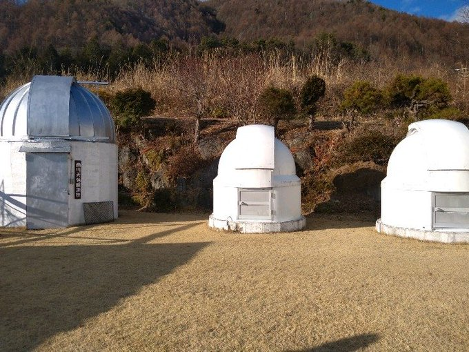
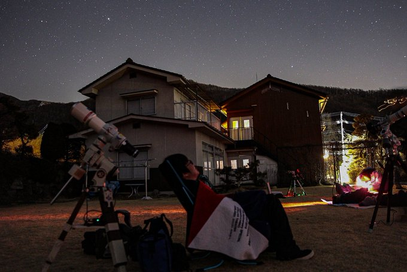
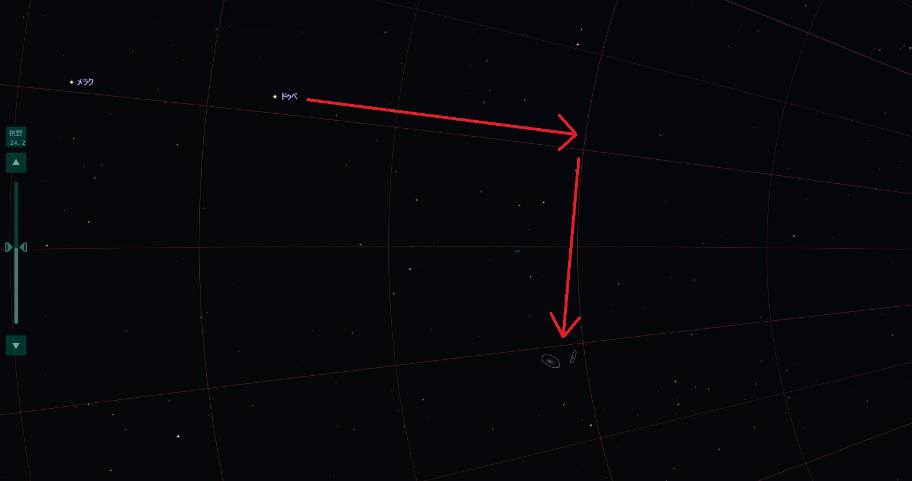
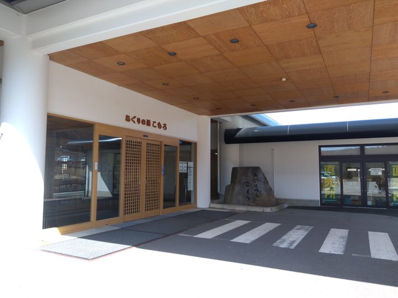

<!DOCTYPE html>
<html>

<head><meta name="generator" content="Hexo 3.8.0">
  <meta charset="utf-8">
  
    <title>
      
        【遠征記】2020年3月 小諸 | 
            ほしよみ大学生のブログ
    </title>
    <meta name="viewport" content="width=device-width">
    <meta name="description" content="あいさつ先日の三連休の間で小諸に星見に行ってきましたので，簡単にまとめておきます．">
<meta name="keywords" content="写真,天体写真,遠征記">
<meta property="og:type" content="article">
<meta property="og:title" content="【遠征記】2020年3月 小諸">
<meta property="og:url" content="http://dabokun.github.io/2020/03/25/00000032-2020-03-komoro/index.html">
<meta property="og:site_name" content="ほしよみ大学生のブログ">
<meta property="og:description" content="あいさつ先日の三連休の間で小諸に星見に行ってきましたので，簡単にまとめておきます．">
<meta property="og:locale" content="ja">
<meta property="og:image" content="http://dabokun.github.io/2020/03/25/00000032-2020-03-komoro/card.jpg">
<meta property="og:updated_time" content="2021-06-07T14:22:16.209Z">
<meta name="twitter:card" content="summary_large_image">
<meta name="twitter:title" content="【遠征記】2020年3月 小諸">
<meta name="twitter:description" content="あいさつ先日の三連休の間で小諸に星見に行ってきましたので，簡単にまとめておきます．">
<meta name="twitter:image" content="http://dabokun.github.io/2020/03/25/00000032-2020-03-komoro/card.jpg">
<meta name="twitter:creator" content="@astrodabo">
      
        <link rel="alternative" href="/atom.xml" title="ほしよみ大学生のブログ" type="application/atom+xml">
        
          
            <link rel="icon" href="/images/favicon.png">
            
              <link rel="stylesheet" href="/css/style.css">
                <!--[if lt IE 9]><script src="//html5shiv.googlecode.com/svn/trunk/html5.js"></script><![endif]-->
                
                  <script data-ad-client="ca-pub-1350688970555904" async src="https://pagead2.googlesyndication.com/pagead/js/adsbygoogle.js"></script>
</head></html>
<body>
  <div id="container">
    <div class="mobile-nav-panel">
	<i class="icon-reorder icon-large"></i>
</div>
<header id="header">
	<h1 class="blog-title">
		<a href="/">
			ほしよみ大学生のブログ
		</a>
	</h1>
	<nav class="nav">
		<ul>
			
				<li><a href="/">
						Home
					</a></li>
				
				<li><a href="/categories">
						Categories
					</a></li>
				
				<li><a href="/tags">
						Tags
					</a></li>
				
				<li><a href="/archives">
						Archives
					</a></li>
				
				<li><a href="/about">
						About
					</a></li>
				
				<li><a href="/work">
						Work
					</a></li>
				
					<li><a id="nav-search-btn" class="nav-icon" title="Search"></a></li>
					<li><a href="https://github.com/dabokun"></a>
					</li>
					<li><a href="https://twitter.com/astrodabo"></a></li>
					
						<li><a href="/atom.xml" id="nav-rss-link" class="nav-icon" title="RSS Feed"></a>
						</li>
						
		</ul>
	</nav>
	<div id="search-form-wrap">
		<form action="//google.com/search" method="get" accept-charset="UTF-8" class="search-form"><input type="search" name="q" class="search-form-input" placeholder="Search"><button type="submit" class="search-form-submit">&#xF002;</button><input type="hidden" name="sitesearch" value="http://dabokun.github.io"></form>
	</div>
</header>

    <div id="main">
      <article id="post-00000032-2020-03-komoro" class="post">
	<footer class="entry-meta-header">
		<span class="meta-elements date">
			<a href="/2020/03/25/00000032-2020-03-komoro/" class="article-date">
  <time datetime="2020-03-25T03:29:24.000Z" itemprop="datePublished">2020-03-25</time>
</a>
		</span>
		<span class="meta-elements author">astr0dab0</span>
		<div class="commentscount">
			
			<a href="http://dabokun.github.io/2020/03/25/00000032-2020-03-komoro/#disqus_thread" class="article-comment-link">Comments</a>
			
		</div>
	</footer>
	
	<header class="entry-header">
		
  
    <h1 class="article-title entry-title" itemprop="name">
      【遠征記】2020年3月 小諸
    </h1>
  

	</header>
	<div class="entry-content">
		
		
		<div id="toc" class="toc-article">
			<p class="toc-title">目次</p>
			<ol class="toc"><li class="toc-item toc-level-3"><a class="toc-link" href="#あいさつ"><span class="toc-number">1.</span> <span class="toc-text">あいさつ</span></a></li><li class="toc-item toc-level-3"><a class="toc-link" href="#小諸へ"><span class="toc-number">2.</span> <span class="toc-text">小諸へ</span></a></li><li class="toc-item toc-level-3"><a class="toc-link" href="#Helinox-ビーチチェアについて"><span class="toc-number">3.</span> <span class="toc-text">Helinox ビーチチェアについて</span></a></li><li class="toc-item toc-level-3"><a class="toc-link" href="#一晩目-～-M81-M82-と-C-2019-Y4-アトラス彗星～"><span class="toc-number">4.</span> <span class="toc-text">一晩目 ～ M81/M82 と C/2019 Y4 アトラス彗星～</span></a></li><li class="toc-item toc-level-3"><a class="toc-link" href="#小休止（銭湯-あぐりの湯こもろ-へ）"><span class="toc-number">5.</span> <span class="toc-text">小休止（銭湯 あぐりの湯こもろ へ）</span></a></li><li class="toc-item toc-level-3"><a class="toc-link" href="#二晩目-～M51-M13～"><span class="toc-number">6.</span> <span class="toc-text">二晩目 ～M51, M13～</span></a></li></ol>
		</div>
		
		<h3 id="あいさつ"><a href="#あいさつ" class="headerlink" title="あいさつ"></a>あいさつ</h3><p>先日の三連休の間で小諸に星見に行ってきましたので，簡単にまとめておきます．</p>
<a id="more"></a>
<h3 id="小諸へ"><a href="#小諸へ" class="headerlink" title="小諸へ"></a>小諸へ</h3><p>私が所属する「屋根裏天文舎」というゆるい星見団体では，夏と冬に一回ずつ星見合宿をします．夏は乗鞍岳の「白雲荘」へ，冬は小諸にある「西川ペンション星の宿」に大体二泊三日で宿泊します．今回も（例年よりちょっと遅めになりますが）そこで星見をするということで，通算三回目（？）の参加をしてきました．夏の乗鞍と比べてしまうと標高の差が大きいので流石に見劣りしてしまう空ですが，何より宿の料理が美味しい，宿から出て15秒のところで観望ができる，コンビニがそれなりに近いというのが西川ペンションの大きな利点です．</p>
<p><br>こんな感じで観測施設もあったりします．対空双眼鏡があるのでメシエ天体や他の銀河などを眺めるにはとても良いです．</p>
<p>毎回大雪が降ったりしてタダでは帰れない冬の星見合宿ですが，今回は特に大きなトラブルもなく，二晩ともそれなりの晴れに恵まれました．<br>今回も基本的に FSQ での撮影と，それからこの合宿の直前に買った Helinox ビーチチェアの使用感を確かめることが主な目的でした．</p>
<h3 id="Helinox-ビーチチェアについて"><a href="#Helinox-ビーチチェアについて" class="headerlink" title="Helinox ビーチチェアについて"></a>Helinox ビーチチェアについて</h3><p>先にチェアについて書いておこうと思います笑 このチェアを買ったのは，Twitter で誰かが良いと言っていたのを頭の片隅で覚えていたからなのです．実際に使ってみると，確かに使い勝手は良かったです．シンプルな構造（フレームをセットして椅子を四箇所で留めるだけ，ちょっと固いのでテンションをかけながら留める必要あり）なのでセッティングや片付けにそこまで時間はかからないし，何よりとても軽い．もともと山にも持っていけるようなものなので当然ですが，ここまで軽いとは驚きでした．それだけ軽いので，風が強い日は外には出せない気がします…笑　ブランケットも使えば，夏場は楽々寝られるでしょう．ある程度の背もたれの大きさがあるタイプなので，真上を見上げることは（相当座高が高くない限り）できませんが，それでも星空を楽しむ分には申し分ないと思います．早く夏の天の川に向かって座ってみたいものです．</p>
<p>至福．</p>
<h3 id="一晩目-～-M81-M82-と-C-2019-Y4-アトラス彗星～"><a href="#一晩目-～-M81-M82-と-C-2019-Y4-アトラス彗星～" class="headerlink" title="一晩目 ～ M81/M82 と C/2019 Y4 アトラス彗星～"></a>一晩目 ～ M81/M82 と C/2019 Y4 アトラス彗星～</h3><p>本当はチェアに座ってぐうたらしていたいところですが，M81/M82 とアトラス彗星が接近中，かつ FSQ の 450mm 写野でギリギリ両方写せるということで，一晩目は M81/M82 を狙うことに決めていました．<br>が，夜半近くのこの領域は高度が高く，いつだったかの M106 のようにそもそも全然導入できない笑．結局，おおぐま座α星（ドゥペ）から目盛り環を使ってなんとか導入…．ファインダーがあれば幾分マシになると思うのですが…（買おうかな）．</p>
<p></p>
<p>そしてさらに困難なのが，アトラス彗星と同写野に入れること．カメラの向きを東西南北揃えてはダメで，よしなに回転させる必要があります．これは気合でなんとかしました．<br>途中インターバルも3分にするというトラブルもあり，彗星をどうこうするというのは今後明るくなってからの課題にしたいと思いますが，とりあえず両方写っただけ万々歳です．</p>
<p></p>
<div style="text-align: center;">
”M81/M82 と C/2019 Y4 アトラス彗星”<br>
2020年3月21日 午前0時57分～ 長野県小諸市西川ペンション星の宿にて<br>
タカハシ FSQ-85EDP (450mm F5.3)<br>
Canon EOS 6D<br>
ISO 3200 / 180s * 32 = 96 min<br>
タカハシ EM-11 Temma2Jr. ノータッチガイド<br>
ステライメージ8 / Adobe Lightroom CC / Photoshop CC<br><br>
</div>

<p>強調したら分子雲がいたので少し炙ってみました．普通に恒星基準で加算平均コンポジットです．シグマクリッピングもしていないので，真ん中を飛行機やら人工衛星やらが通過していますが，まああまり気にしない感じで…笑．注目されているこの C/2019 Y4 ですが，しっかり増光してくれるといいですね．</p>
<h3 id="小休止（銭湯-あぐりの湯こもろ-へ）"><a href="#小休止（銭湯-あぐりの湯こもろ-へ）" class="headerlink" title="小休止（銭湯 あぐりの湯こもろ へ）"></a>小休止（銭湯 あぐりの湯こもろ へ）</h3><p>翌日少しお腹の調子が悪かったのですが，朝食を食べてしばらくしたら復活したので，上の作品のコンポジットを仕掛けて温泉へ向かいました．ここらで温泉に入るのは三回目の参加にして初めてでしたが，とても良い温泉でした．もう1年早く知っておきたかった…．</p>
<p></p>
<p>サウナは二段あって上段で暑すぎも寒すぎもせず，水風呂は15度と個人的には少し冷たいくらい．そして何より，脱衣所に湯上がり室という部屋があって，外気浴ができないほど寒い時期にはこの部屋が最適．バチバチに整うことができました．これで入館料500円なので，コスパはかなり良いと思います．また行きます．</p>
<h3 id="二晩目-～M51-M13～"><a href="#二晩目-～M51-M13～" class="headerlink" title="二晩目 ～M51, M13～"></a>二晩目 ～M51, M13～</h3><p>一晩目で苦労したので，今回は楽に撮影できる対象を主に狙いました．M51 子持ち銀河と M13 球状星団．450mm では少し小さめですが，両方とも導入は楽な対象です．</p>
<p></p>
<div style="text-align: center;">
”M51 子持ち銀河”<br>
2020年3月21日 午後10時10分～ 長野県小諸市西川ペンション星の宿にて<br>
タカハシ FSQ-85EDP (450mm F5.3)<br>
Canon EOS 6D<br>
ISO 3200 / 180s * 36 = 108 min<br>
タカハシ EM-11 Temma2Jr. ノータッチガイド<br>
ステライメージ8 / Adobe Lightroom CC / Photoshop CC<br><br>
</div>

<p>まずM51．フラットがめんどくさかったので上下はトリミングしました．しっかりと自分の中の子持ちらしい出来になったかなと思います．</p>
<p></p>
<div style="text-align: center;">
”M13 球状星団”<br>
2020年3月22日 午前0時24分～ 長野県小諸市西川ペンション星の宿にて<br>
タカハシ FSQ-85EDP (450mm F5.3)<br>
Canon EOS 6D<br>
ISO 3200 / 180s * 32 = 96 min<br>
タカハシ EM-11 Temma2Jr. ノータッチガイド<br>
ステライメージ8 / Adobe Lightroom CC / Photoshop CC<br><br>
</div>

<p>こちらはM13．やはりトリミング．大規模な星団なだけあって写真でも見応えがあって美しいですね．<br>本当はもう少し春の銀河を撮ってみたさもありますが，今シーズンはこれくらいになりますかね．今回の新月期も上弦までまだ少しありますが，天気的に遠征に出られるかどうかは怪しいです．次の新月期では恐らく夏の天の川を狙うことになるでしょう（どこを撮るかは既に決めています，といってもオーソドックスな場所ですが）．</p>
<p>それでは～．</p>

		
	</div>
	<footer class="article-footer">
		<a href="https://twitter.com/intent/tweet?text=%E3%80%90%E9%81%A0%E5%BE%81%E8%A8%98%E3%80%912020%E5%B9%B43%E6%9C%88%20%E5%B0%8F%E8%AB%B8｜%E3%81%BB%E3%81%97%E3%82%88%E3%81%BF%E5%A4%A7%E5%AD%A6%E7%94%9F%E3%81%AE%E3%83%96%E3%83%AD%E3%82%B0&url=http://dabokun.github.io/2020/03/25/00000032-2020-03-komoro/" class="twitter-share-button" target="_blank" title="Twitter"></a>
		<script async src="https://platform.twitter.com/widgets.js" charset="utf-8"></script>

		<div id="fb-root"></div>
		<script async defer crossorigin="anonymous" src="https://connect.facebook.net/ja_JP/sdk.js#xfbml=1&version=v4.0"></script>
		<div class="fb-share-button" data-href="http://dabokun.github.io/2020/03/25/00000032-2020-03-komoro/" data-layout="button_count" data-size="small"><a target="_blank" href="https://www.facebook.com/sharer/sharer.php?u=https%3A%2F%2Fdabokun.github.io%2F&amp;src=sdkpreparse" class="fb-xfbml-parse-ignore">シェア</a></div>
	</footer>
	<footer class="entry-footer">
		<div class="entry-meta-footer">
			<span class="category">
				
  <div class="article-category">
    <a class="article-category-link" href="/categories/expedition/">遠征記</a>
  </div>

			</span>
			<span class=" tags">
				
  <ul class="article-tag-list"><li class="article-tag-list-item"><a class="article-tag-list-link" href="/tags/photography/">写真</a></li><li class="article-tag-list-item"><a class="article-tag-list-link" href="/tags/astrophotography/">天体写真</a></li><li class="article-tag-list-item"><a class="article-tag-list-link" href="/tags/expedition/">遠征記</a></li></ul>

			</span>
		</div>
	</footer>
	
	
<nav id="article-nav">
  
    <a href="/2020/06/01/00000033-2020-05-amagi/" id="article-nav-newer" class="article-nav-link-wrap">
      <strong class="article-nav-caption">Newer</strong>
      <div class="article-nav-title">
        
          【遠征記】2020年5月 天城
        
      </div>
    </a>
  
  
    <a href="/2020/03/04/00000031-2019-12-otaki/" id="article-nav-older" class="article-nav-link-wrap">
      <strong class="article-nav-caption">Older</strong>
      <div class="article-nav-title">
        
          【遠征記】2019年12月 おんたけ2240（天文ガイド入選）
        
      </div>
    </a>
  
</nav>

	
</article>


<section id="comments">
	<div id="disqus_thread">
		<noscript>Please enable JavaScript to view the <a href="//disqus.com/?ref_noscript">comments powered by
				Disqus.</a></noscript>
	</div>
</section>

    </div>
    <div class="mb-search">
  <form action="//google.com/search" method="get" accept-charset="utf-8">
    <input type="search" name="q" results="0" placeholder="Search">
    <input type="hidden" name="q" value="site:dabokun.github.io">
  </form>
</div>
<footer id="footer">
	<h1 class="footer-blog-title">
		<a href="/">ほしよみ大学生のブログ</a>
	</h1>
	<span class="copyright">
		&copy; 2022 astr0dab0<br>
		Modify from <a href="http://sanographix.github.io/tumblr/apollo/" target="_blank">Apollo</a> theme, designed by <a href="http://www.sanographix.net/" target="_blank">SANOGRAPHIX.NET</a><br>
		Powered by <a href="http://hexo.io/" target="_blank">Hexo</a>
	</span>
</footer>
    
<script>
  var disqus_shortname = 'astr0dab0';
  
  var disqus_url = 'http://dabokun.github.io/2020/03/25/00000032-2020-03-komoro/';
  
  (function(){
    var dsq = document.createElement('script');
    dsq.type = 'text/javascript';
    dsq.async = true;
    dsq.src = '//go.disqus.com/embed.js';
    (document.getElementsByTagName('head')[0] || document.getElementsByTagName('body')[0]).appendChild(dsq);
  })();
</script>


<script src="//ajax.googleapis.com/ajax/libs/jquery/2.0.3/jquery.min.js"></script>


<link rel="stylesheet" href="/fancybox/jquery.fancybox.css" media="screen" type="text/css">
<script src="/fancybox/jquery.fancybox.pack.js"></script>


<script src="/js/script.js"></script>
  </div>
</body>
</html>